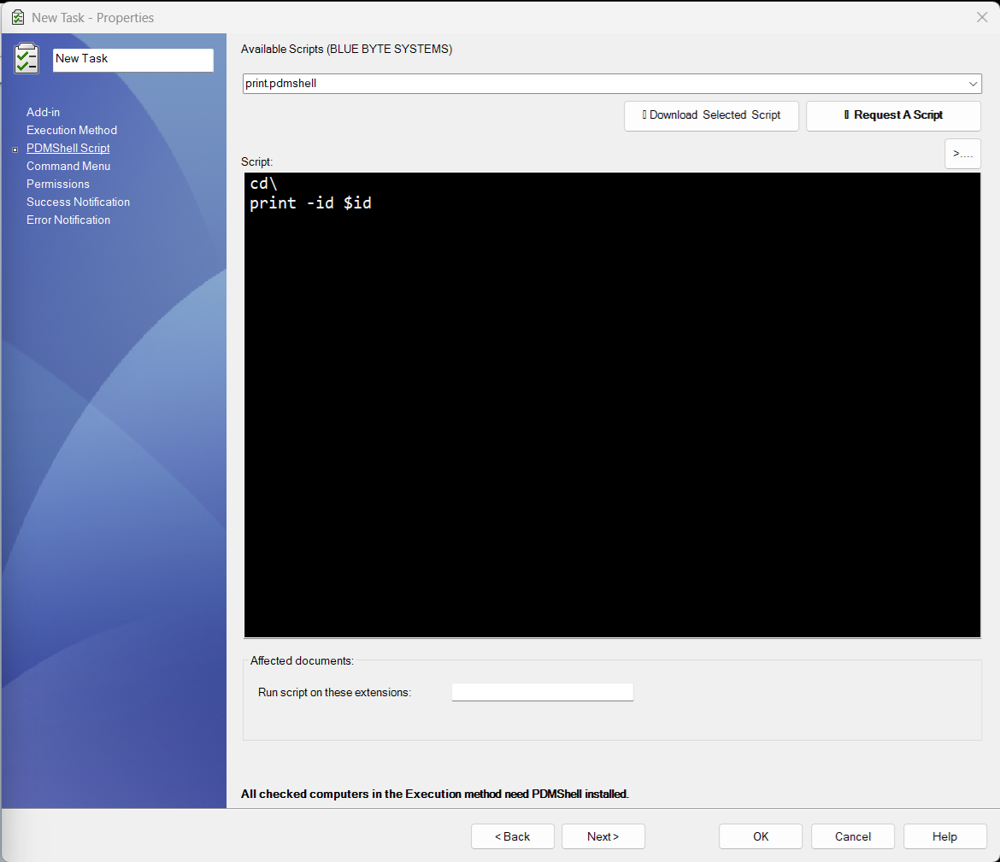

Overview
TaskScript is a custom PDM task add-in developed by Blue Byte Systems Inc. that allows you to execute PDMShell scripts the same way you would use the built-in Convert task.
This task can be requested upon purchase of a premium license of PDMShell.
With TaskScript, administrators can create configurable tasks that run custom .pdmshell scripts using the pdmcli engine on selected files within the vault.
Key Features
- Execute PDMShell commands in response to PDM task triggers
- Dynamic script editing and variable binding
- Reuses existing scripts stored locally or downloaded
- Supports file filtering based on extensions
- Evaluates placeholders like
$fileName,$localPath, and more - Handles script failure with detailed logging
PDMShell Scrit page

1. Available Scripts (BLUE BYTE SYSTEMS)
- A dropdown list showing available
.pdmshellscripts. - These can be downloaded.
- Selecting a script from the list loads it into the editor.
2. Buttons
DOWNLOAD SELECTED
Downloads the currently selected script file.REQUEST A SCRIPT
Opens a preformatted email toamen@bluebyte.bizwith the subject "Script Request".REFRESH
Reloads the available script list.
3. Script Editor
- A multi-line editable area for entering or modifying
.pdmshellscripts. - Lines starting with
#are treated as comments. - Syntax highlighting shows comments in italic green for better readability.
4. Extensions and test button
- Specify the extensions to process.
- TEST WITH FILE allows to test your script before running it.
Example Script
cd/
print -id $id
You can request a script by emailing us via the Request Script button.
Remarks
- You can include the extensions:
sldprt;sldasm;slddrware the default value. - TaskScript will run PDMShell sessions on all affected documents by the task.
- Do not forget to set the Command Menu tab.
Placeholder Variables
TaskScript supports dynamic variables that are replaced at runtime for each selected file. Below is a list of available placeholders:
| Placeholder | Description |
|---|---|
$localPath |
Full local path to the selected file |
$fileName |
File name (including extension) |
$id |
Internal PDM file ID |
$folderPath |
Full local path to the file's parent folder |
$folderID |
Internal PDM folder ID |
$fileNameWithoutExtension |
File name without the extension |
$vaultName |
Name of the vault the file belongs to |
$vaultRootFolder |
Local root path of the vault |
$(Variable.Configuration) |
Value of a custom PDM variable for a given configuration |
$(Variable.Configuration)
- Use
@for the@tab. Example:$(Description.@) - Use empty string for files with no configurations. Example:
$(Description. )